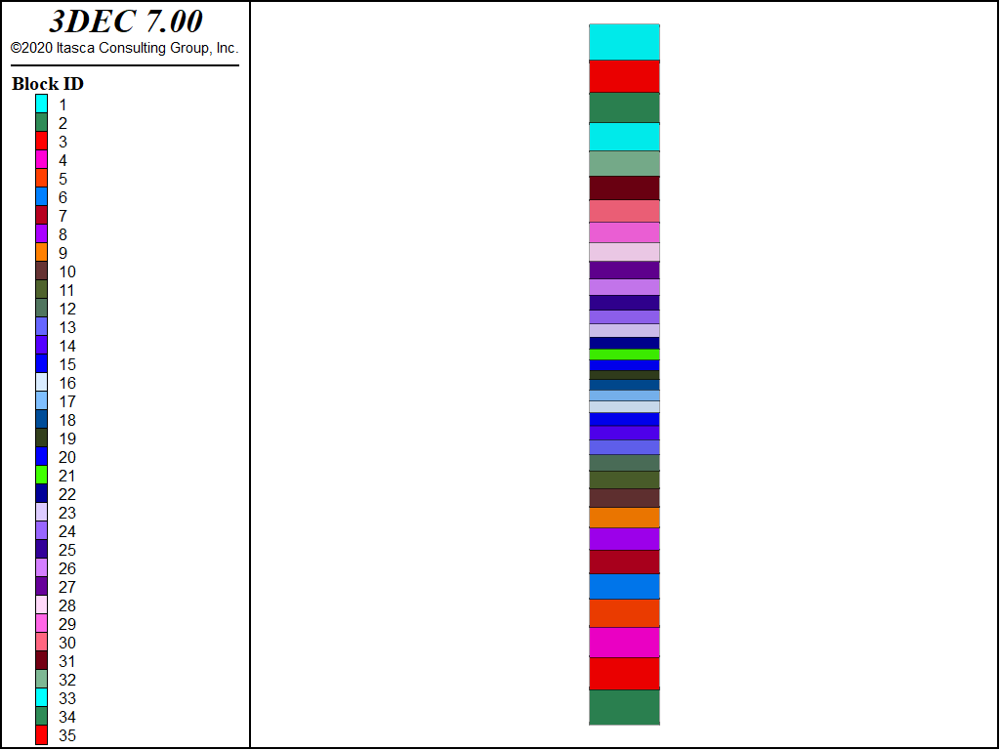
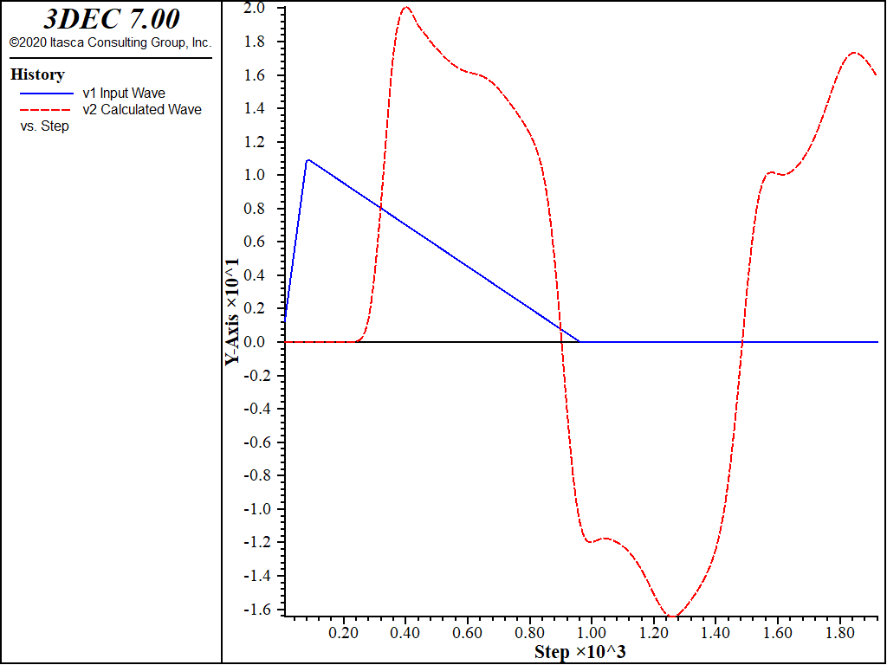
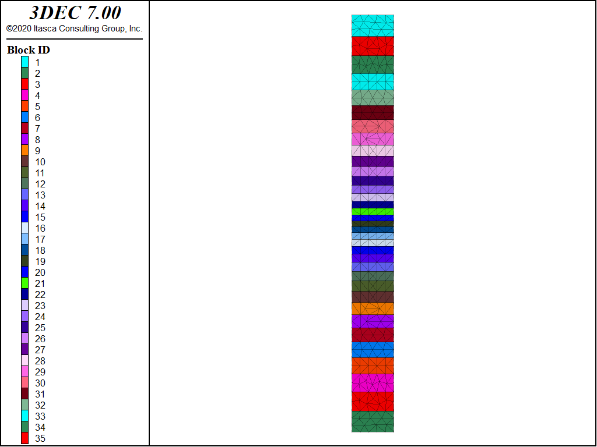
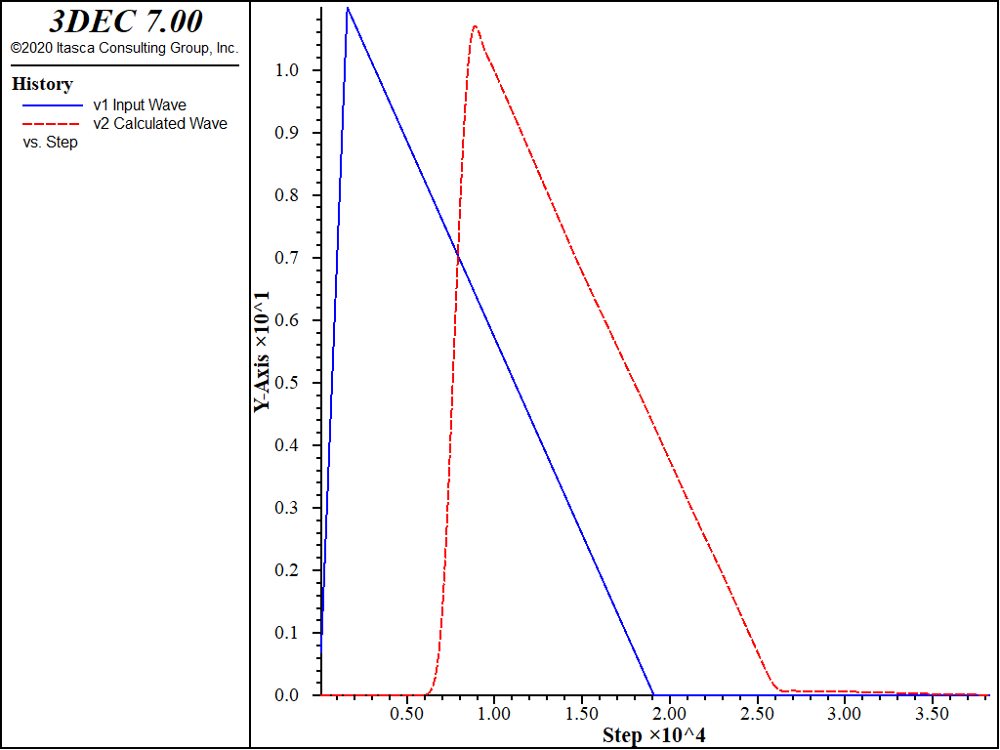
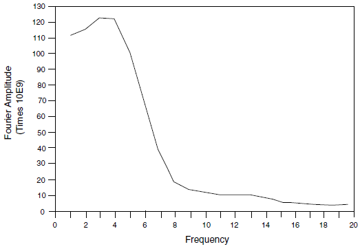
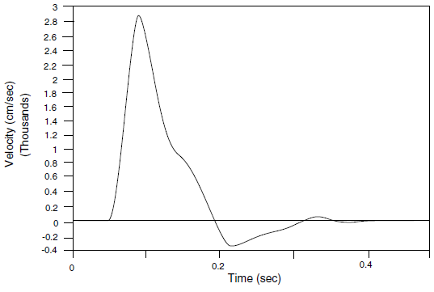
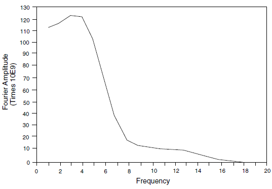

波传播
原位节理的物理刚度可能对地震波传播有实质影响。Myer 等人（1990）给出的现场和室内试验结果表明，岩石中干燥天然裂隙的刚度会影响高频衰减以及地震波走时的变化。若要准确模拟波的传播，在非连续介质模型中体现这一效应可能很重要。不过，必须注意不要引入可能掩盖节理对波传播实际效应的数值畸变。
动力分析中，无论基于连续介质程序还是非连续介质程序，随建模条件的不同，都可能出现传播波的数值畸变。输入波的频率成分和体系的波速特性都会影响波传播的数值精度。Kuhlemeyer 和 Lysmer（1973）指出，为准确表示波在模型中的传播，空间单元尺寸必须小于输入波最高频率成分相应波长的大约十分之一至八分之一，即
其中 \(γ\) 为与通过介质的峰值速度的最高频率成分相应的波长。 对于非连续介质程序，这也适用于节理间距（或块体尺寸）。
为在离散元模型中准确表示应力波，特别是当节理间距变化时，应将块体设为可变形，以满足频率和波长所施加的单元尺寸限制。如 3DEC 理论与背景（3DEC Theory and Background） 中所述，在 3DEC 中通过将每个块体细分为有限差分单元网格来实现这一点。这些单元随即受 Kuhlemeyer 和 Lysmer 限制的约束。
通过对底部承受冲击荷载的块体柱进行简单分析，可以说明模型条件对波传播数值畸变的影响（图 1（Figure 1） 和 图 3（Figure 3））。块体尺寸为 1 m 至 5 m（平均尺寸 2 m），块体之间的接触呈线弹性，体系的 P 波速度为 4300 m/s。在底部施加三角形冲击荷载，其最高频率约为 200 Hz（图 2（Figure 2） 和 图 4（Figure 4） 中的实线）。与该体系最高频率相应的波长为 21.5 m。因此，按照 Kuhlemeyer 和 Lysmer 的要求，为使该波无畸变地传播，单元尺寸不得超过约 2 m。
用恒定接触法向刚度进行刚性块体分析，以产生 4300 m/s 的平均波速（基于平均节理间距）。在柱体顶部计算得到严重畸变的速度时程，如图 2.9 中的虚线所示。对于该问题，可通过局部改变法向刚度使块体之间接触处的波速保持恒定，从而减小这种畸变。但一般来说，对于多重节理体系，有效（局部）法向刚度的计算变得极为复杂，使该方法不切实际。
采用有限差分单元最大尺寸小于 2 m 的可变形块体分析（见 图 3（Figure 3））。块体的弹性模量和接触刚度经计算取值，以产生给定的 \(p\) 波速。如 图 4（Figure 4） 所示，柱体顶部波的畸变此时已基本消除。在这种情况下，弹性变形参数分别表示块体和接触的物理属性，无需作局部调整。
对于节理、断层、层面等地质结构的法向刚度和剪切刚度，通常不易获得实测值。往往需要根据完整材料弹性变形特性的实测值以及穿过节理体系的波速来反算这些属性。例如，Singh（1973）和 Gerrard（1982）给出了等效弹性连续介质属性与完整材料及节理属性之间的关系式。在 3DEC 中，可利用这些关系为节理刚度属性提供合理估计，以重现体系的实测剪切波速和压缩波速。


图 1：底部承受三角形冲击荷载的变尺寸块体柱。


图 2：刚性块体模型柱体底部的输入波（实线）和顶部的计算波（虚线）。


图 3：划分为有限差分离散单元的变尺寸块体柱。


图 4：可变形块体模型柱体底部的输入波（实线）和顶部的计算波（虚线）。
数据文件 - 通过刚性块体的传播
;-----------------------------------------------------------------------
; 向由不同尺寸刚性块体组成的柱体施加脉冲
;-----------------------------------------------------------------------
model new
model title "Impulse applied to column of rigid blocks"
model config dynamic
model large-strain on
;几何形状
block create brick 0,10 0,10 0,100
; 通过 program call 调用用于切割块体的 FISH 函数
program call "impulse.fis"
[varcut]
block prop dens 1000
; 创建子接触并指定参数
block contact gen-sub
block contact jmodel assign el
block contact prop stiffness-normal 10e9 stiffness-shear 10e9
block contact material-table default prop stiffness-normal 10e9 ...
stiffness-shear 10e9
[impulse_ini]
[vmax = 11.0]
[tpeak = 0.005]
[tend = 0.06]
; 固定底部块体，以便向刚性块体模型施加脉冲
block apply vel-z 1.0 fish pulse range pos-x 0,10 pos-y 0,10 pos-z 0,5
; 顶部采用静默边界
block gridpoint apply visc-z range pos-z 100
; 监测底部和顶部速度
hist interval 10
block hist name 'v1' vel-z pos 0,0,0
block hist name 'v2' vel-z pos 0,0,95
fish hist pulse
model hist name 'Time' dynamic time-total
hist name 'v1' label 'Input Wave'
hist name 'v2' label 'Calculated Wave'
hist name 'Time' label 'Time'
; adip-direction：5\\% 刚度阻尼
block mech damp rayleigh 0.05 200 stiff
model solve time-total 0.12
model save "impulse-rigid"
数据文件 - 通过可变形块体的传播
;-----------------------------------------------------------------------
; 向由不同尺寸可变形块体组成的柱体施加脉冲
;-----------------------------------------------------------------------
model new
model title "Impulse applied to column of deformable blocks"
model config dynamic
model large-strain on
;几何形状
block create brick 0,10 0,10 0,100
; 通过 program call 调用用于切割块体的 FISH 函数
program call "impulse.fis"
[varcut]
block zone gen edgelength 2
block zone cmodel assign el
block zone prop dens 1000 bulk 10e9 shear 7.5e9
; 创建子接触并指定参数
block contact gen-sub
block contact jmodel assign el
block contact prop stiffness-normal 200e9 stiffness-shear 200e9
block contact material-table default prop stiffness-normal 200e9 ...
stiffness-shear 200e9
[impulse_ini]
[vmax = 11.0]
[tpeak = 0.005]
[tend = 0.06]
; 在底部施加脉冲
block gridpoint apply vel-z 1.0 fish pulse range pos-z 0
; 顶部采用静默边界
block gridpoint apply visc-z range pos-z 100
block gridpoint apply vel-x 0.0 range pos-x 0
block gridpoint apply vel-x 0.0 range pos-x 10
block gridpoint apply vel-y 0.0 range pos-y 0
block gridpoint apply vel-y 0.0 range pos-y 10
; 监测底部和顶部速度
hist interval 100
block hist name 'v1' vel-z pos 0,0,0
block hist name 'v2' vel-z pos 0,0,95
fish hist pulse
model hist name 'Time' dynamic time-total
hist name 'v1' label 'Input Wave'
hist name 'v2' label 'Calculated Wave'
hist name 'Time' label 'Time'
; adip-direction：5\\% 刚度阻尼
block mech damp rayleigh 0.05 200 stiff
model solve time-total 0.12
model save "impulse-deformable"
对于峰值速度高、上升时间短的动力输入，Kuhlemeyer 和 Lysmer 的要求可能迫使采用非常细的空间网格和相应很小的时步。在非连续介质程序中，这种影响会进一步加剧，因为波跨过不连续面传播时会产生比输入波更高的频率成分。其结果是，原本合理的分析可能变得极为耗时、耗内存，而且费用高昂。在这种情况下，可以通过认识到输入时程的大部分功率都包含在较低频率成分中，来调整输入。对时程进行滤波并去除高频成分后，即可采用较粗的网格，而不会显著影响结果。
滤波过程可用低通滤波程序（例如快速傅里叶变换技术）完成。例如，图 5（Figure 5） 所示的未滤波速度记录表示一个含甚高频尖峰的典型波形。该输入的最高频率超过 50 Hz，但如傅里叶幅值随频率变化的功率谱密度图（图 6（Figure 6））所示，大部分功率（约 99%）由频率为 15 Hz 或更低的成分构成。因此可以推断，用 15 Hz 低通滤波器对该速度时程滤波，损失的功率不到 1%。经 15 Hz 滤波的输入如 图 7（Figure 7） 所示，其傅里叶幅值绘制于 图 8（Figure 8）。未滤波与滤波输入的功率之差小于 1%，而峰值速度降低 38%，上升时间由 0.035 秒移至 0.09 秒。应在不同滤波水平下用输入进行分析，以评估滤波器对模型结果的影响。

图 5：未滤波的速度时程。


图 6：未滤波的功率谱密度图。


图 7：15 Hz 滤波后的速度时程。


图 8：15 Hz 滤波的结果。
| 这些内容对您有帮助吗？… | FLAC3D © 2019, Itasca | 原文更新于 2020 年 10 月 8 日 |
| 版权与免责声明 | ||